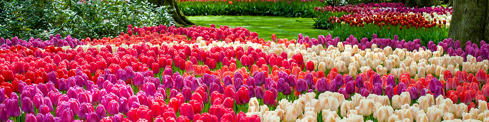
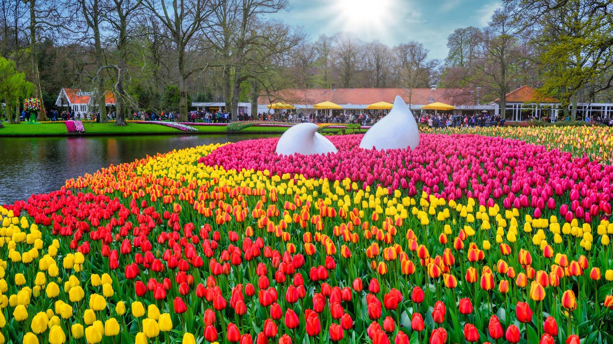
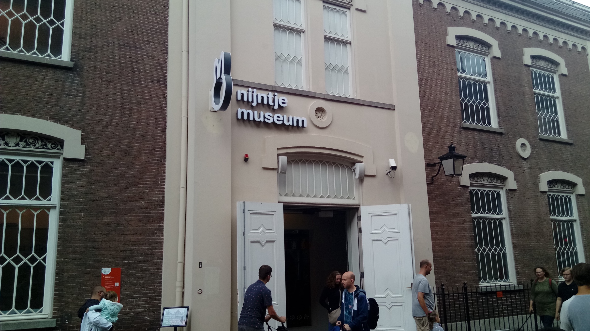
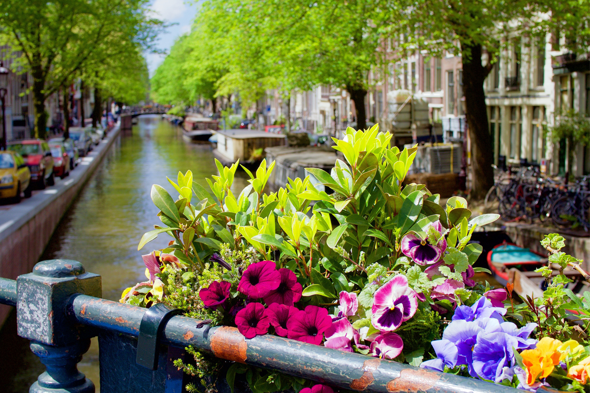
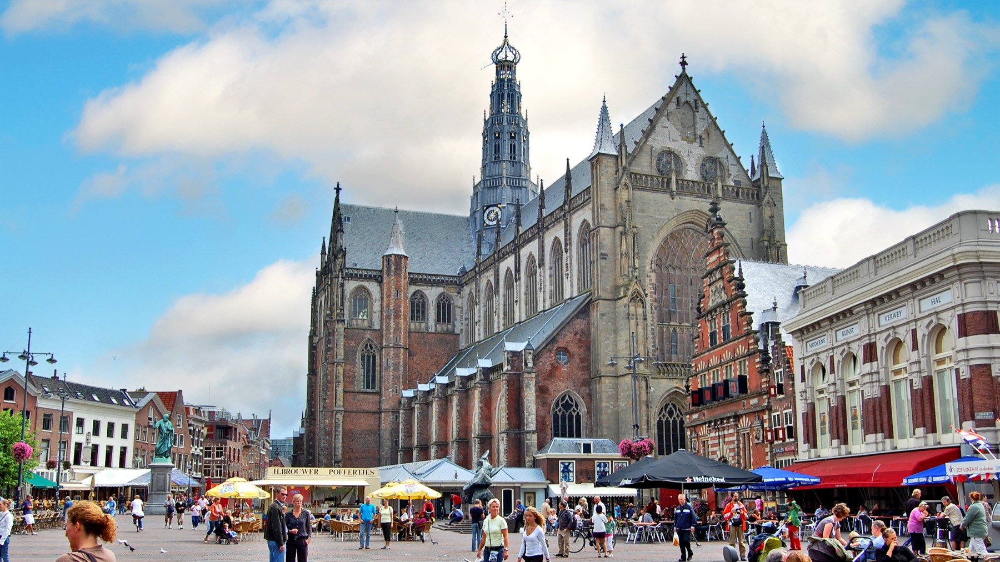
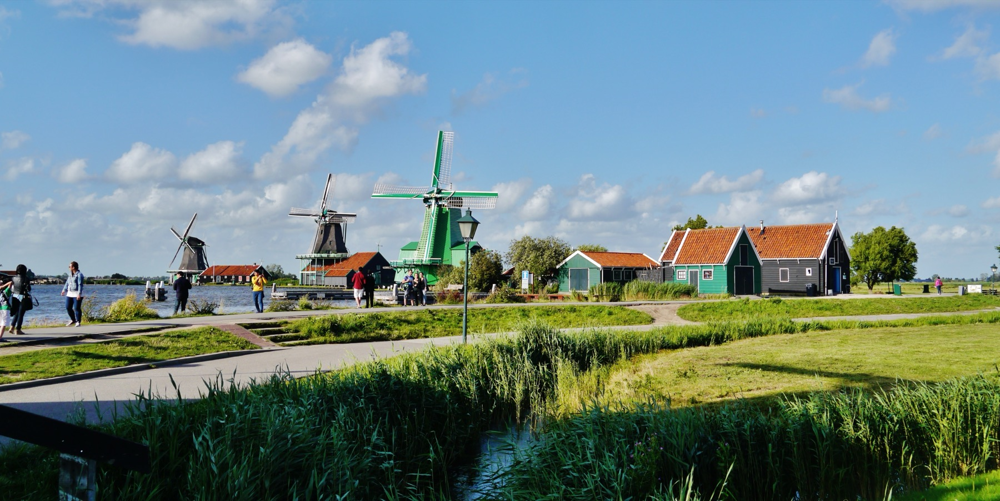

Four day trips worth the train ride, ranked for this family. One is non-negotiable and closes May 10.
Based on the family composition, timing, and what closes first.
Seven million bulbs. Completely flat. Bodhi free. Closes May 10 — book before you land.
No walk-up tickets in peak season. Buy online at keukenhof.nl, roughly €21.50/adult. Bodhi free (under 4). Plan for day 2 of the trip before the window closes.

The 2026 theme is "Inspiration": seven million bulbs across 32 hectares. Late-variety tulips are still spectacular in late April and early May. The gardens are completely flat and fully stroller-friendly.
A weekday morning is the right call. Gates open at 8 AM; arriving early means an hour of calm before the tour buses arrive around 10.
The easiest option: Keukenhof Express bus from Amsterdam RAI station. €18.20 round trip per adult. Bodhi free. Runs direct, takes about 60 minutes total. Buy the combined bus + entry ticket online to skip the queue entirely.
Alternative: Train to Leiden Centraal, then bus 854 to Keukenhof. Slightly cheaper, slightly slower, and requires a transfer. The Express is worth it for the group.
An optional boat tour around the Keukenhof estate runs about €10 extra per person. Different view of the flower fields from the water. Worth it if the group has energy after walking; Bodhi will love it. Book at the dock, no pre-booking needed.
The on-site shop has excellent quality bulbs, far better selection and certification than airport souvenir shops. Pre-packaged bulbs are permitted through US customs when properly labeled, which these are.
A proper café on site handles lunch. Prices are tourist-attraction standard. Bring snacks for Bodhi. The picnic areas are lovely on a sunny day.
Designed specifically for ages 2–6. Twelve themed rooms. Bodhi can touch everything.

Twelve themed rooms built at toddler height: Miffy's house, a traffic village, a farm room, a zoo room with toy animals, a boat room, and a discovery corner. Everything can be touched. Nothing is behind glass. The whole museum is calibrated to exactly Bodhi's age group (2–6).
Book timed entry slots in advance at nijntjemuseum.nl; popular slots fill weeks ahead, especially on weekends.
After the museum: walk along the Oudegracht canal. Utrecht's canals sit at a lower level than the street, with terraced café-restaurants built right on the waterside. You eat below street level; boats pass at eye level. It's unlike any other Dutch city. The Domtoren is visible from the canal if there's energy for a climb.

20 minutes by train. More walkable than Amsterdam, and beautiful in its own right.

The right choice for a morning when Amsterdam starts to feel overwhelming. Smaller, quieter, and surprisingly beautiful. The Grote Markt is one of the finest central squares in the Netherlands. Bike rental at the station or walk everywhere.
Haarlem's central square is ringed by café terraces and dominated by the Grote Kerk (St. Bavo's Church). Less touristy than Amsterdam's Dam Square. Good for coffee, people-watching, and letting Bodhi run on cobblestones.
Portraits of Haarlem's 17th-century merchant class. More intimate than the Rijksmuseum; you can actually get close to the paintings. Closed Mondays. Worth an hour if Golden Age painting interests anyone; skip if it doesn't.
The oldest museum in the Netherlands (1784): a beautiful oval hall filled with fossils, minerals, scientific instruments, and old master drawings. The building itself is the attraction. Free with Museumkaart. Calm, quiet, and very accessible.
Working windmills, wooden green-painted houses, a stroopwafel bakery. Go before 10 AM or after 3 PM.

Six historic working windmills along a river, surrounded by traditional wooden houses painted the characteristic Dutch green. Not a theme park: a preserved district of actual historic buildings, some still operating as cheese farms, clog workshops, and a stroopwafel bakery.
This is one of the most-visited sites near Amsterdam. Between 10 and 3, tour buses pack it out. Go early morning or late afternoon. Bodhi will have more space to run and you'll get better photos.
Optional. Only if there's a free day and the group wants to go deeper into Dutch history.
Home to the Netherlands' oldest university (1575) and Rembrandt's birthplace. Beautiful canal system, a busy market twice a week. Best reason to go: Naturalis — the national natural history museum with a T-Rex skeleton and a good kids' section. Free with Museumkaart. Rijksmuseum van Oudheden (Egyptian mummies, antiquities) is also free with the card.
Leiden is the lowest priority. Skip it unless there's a free day with nothing else to fill. Keukenhof, Miffy Museum, and Haarlem cover more ground and serve the family better.
All these destinations are on the Dutch national rail network. Buy tickets on the NS app or at the station.
| Destination | From | Travel time | Approx. cost (adult) | Book ahead? |
|---|---|---|---|---|
| Keukenhof | Amsterdam RAI | ~60 min (Express bus) | €18.20 rt + €21.50 entry | Yes — buy online |
| Utrecht (Miffy) | Amsterdam Centraal | ~30 min | €7–9 each way | Museum: yes. Train: no. |
| Haarlem | Amsterdam Centraal | ~20 min | ~€5 each way | No |
| Zaandam (Zaanse Schans) | Amsterdam Centraal | ~20 min + 15 min walk | ~€5 each way | No |
| Leiden | Amsterdam Centraal | ~35 min | ~€9 each way | No |